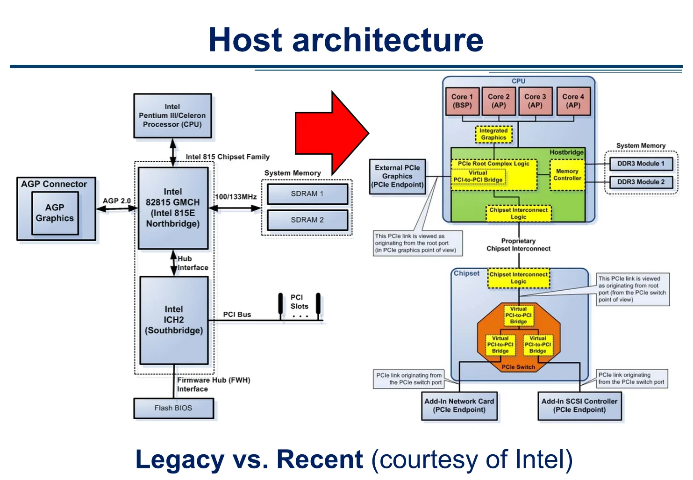
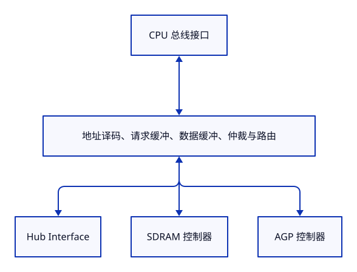
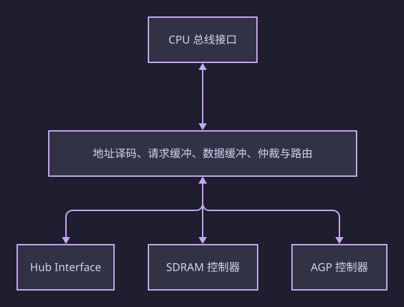
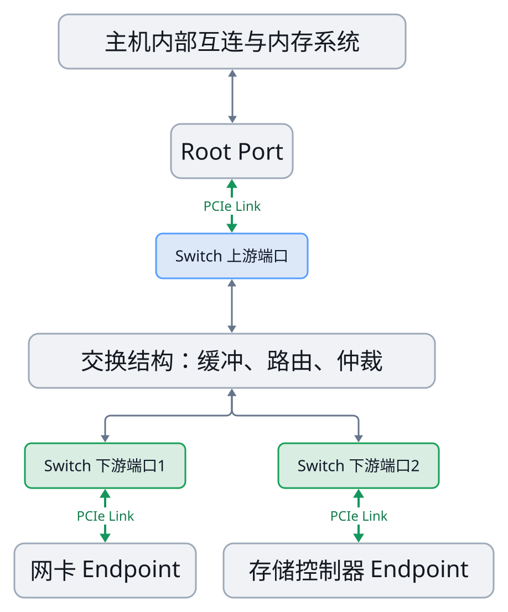
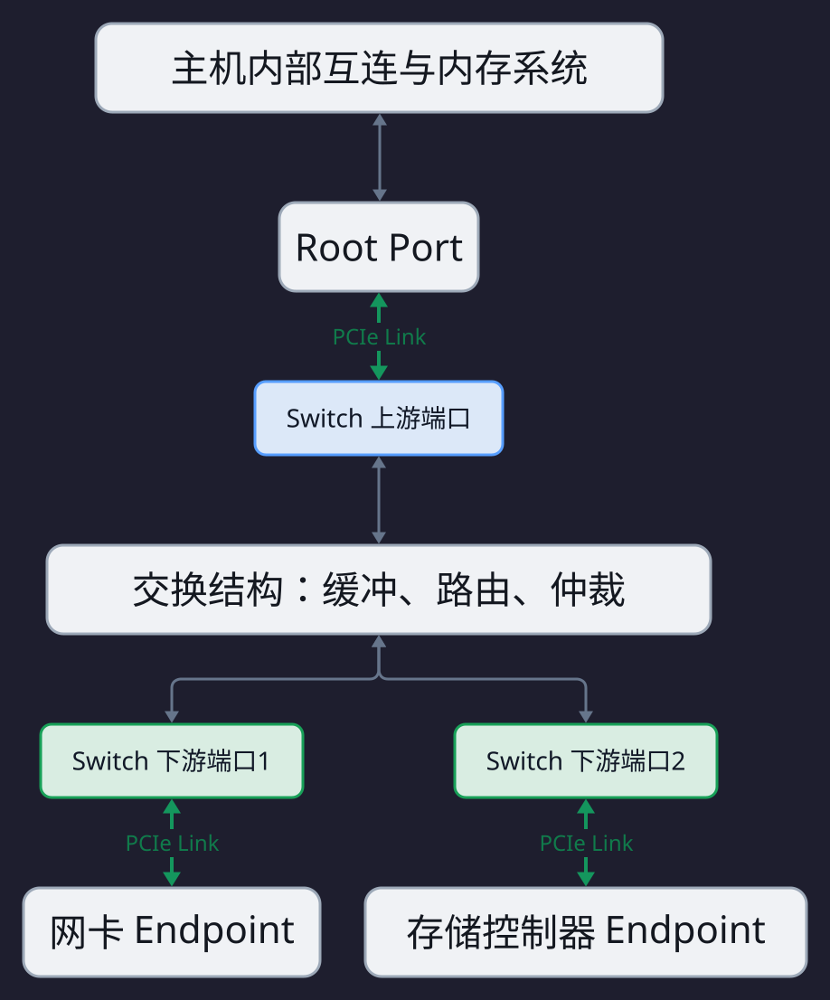
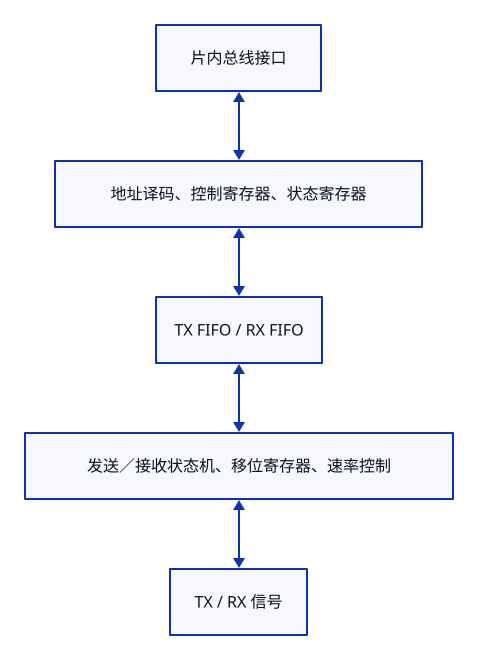
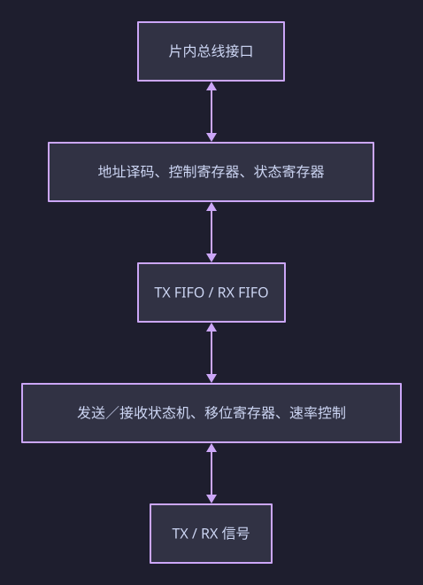
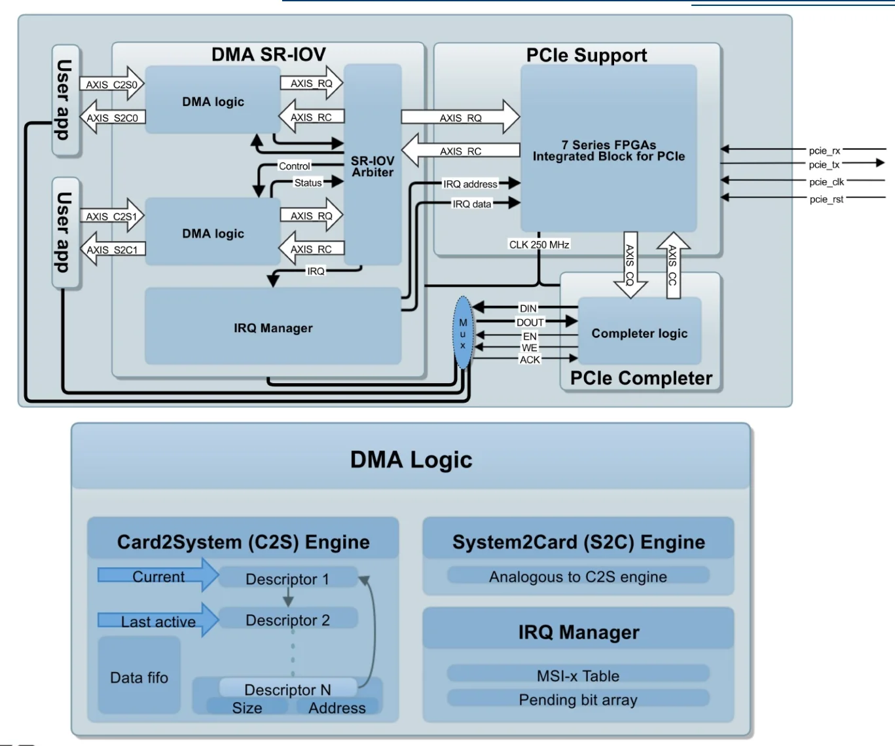

NetFPGA 2015 Summer Course¶
这份课件主要介绍：FPGA 网卡怎样通过 PCIe 和 DMA 与主机交换数据。涉及内容包括：经典 Host Architecture、PCIe 数据流通路、Scatter-Gather DMA、RIFFA
来源：2015_Summer_Camp_Day4_dma.pdf
I. Host Architecture¶

这一页架构图画的是通用计算机主机：处理器、内存和外设怎样组织在一起。
左侧主要包含：
| 模块 | 在系统中的作用 |
|---|---|
| Pentium III / Celeron CPU | 执行程序，发起内存和 I/O 访问 |
| 82815 GMCH，即北桥 | 连接 CPU、SDRAM、AGP 显卡和南桥 |
| SDRAM | 保存正在运行的程序和数据 |
| AGP Graphics | 通过 AGP 接口连接的图形处理设备 |
| ICH2，即南桥 | 汇集 PCI、固件存储及其他 I/O 功能 |
| PCI Bus、PCI Slots | 连接可插拔的扩展卡 |
| Flash BIOS | 保存启动固件 |
右侧主要包含：
| 模块 | 在系统中的作用 |
|---|---|
| Core 1～4 | 四个执行程序的处理器核 |
| Integrated Graphics | 集成图形处理逻辑 |
| Hostbridge | 图中连接处理器核、内存控制器及 I/O 通路的主机侧逻辑集合 |
| Memory Controller | 控制 DDR3 内存访问 |
| PCIe Root Complex Logic | 将主机内部访问与 PCIe 事务衔接起来 |
| Chipset Interconnect Logic | 处理 CPU 与芯片组之间的专有互连 |
| Chipset | 承载图中下面一部分 I/O 扩展功能 |
| PCIe Switch | 将一条上游通路扩展到多个下游设备 |
| 外接显卡、网卡、SCSI 控制器 | 具体执行图形、网络和存储任务的设备 |
关于右侧的处理器核：BSP 是 Bootstrap Processor，表示启动时承担引导职责的处理器；AP 是 Application Processor，表示其他处理器。这里主要是在标识启动角色。
整体系统能够运行操作系统和应用程序，通过内存保存程序及数据，通过显卡显示，通过网卡联网，通过存储控制器访问存储设备。但是它不是一张完整的主板原理图。CPU 缓存、片上互连、时钟、电源、许多外设控制器等都被省略了。
如下对这幅架构图中的一些关键结构做介绍。
1.1 “南桥”与“北桥”¶
北桥、南桥是历史上的芯片组功能划分，左图中它们对应两颗独立芯片。
“北”“南”是架构图中位置的惯用命名，不是某种特殊的电路原理。理解它们时，应关注各自连接哪些接口。
北桥负责连接当时带宽要求较高的几部分*¶
左图是早期的“CPU＋北桥＋南桥”架构，其中 82815 GMCH 是北桥，内部大概是这样的：
 
从数字电路角度，这类芯片通常包含寄存器、地址比较器、FIFO、仲裁器、数据选择器、协议状态机和内存控制逻辑。
例如 CPU 发生一次需要访问 SDRAM 的缓存未命中，简化过程是：
CPU 发出访存请求 → CPU 总线把地址、操作类型传给北桥 → 北桥判断目标属于 SDRAM → 内存控制器安排 SDRAM 命令 → SDRAM 返回数据 → 北桥通过 CPU 总线返回数据
例如 82815 的 CPU 总线接口包含：
HA[31:3]#：主机地址信号；HD[63:0]#：主机数据信号；ADS#、DRDY#等：事务及数据传输相关控制信号。
到 SDRAM 一侧，则是内存地址、Bank、数据、片选以及读写命令相关信号。北桥需要协调两侧不同的协议和时序。
Hub Interface 是 Intel 当时用于 GMCH 与 ICH2 之间的专用互连，它承载南桥侧与北桥／主机内存侧之间的事务。ICH2 数据手册给出了具体接口信号，例如 HL[11:0]、HL_STB、HL_STB#，后两者是相关的选通信号。ICH2 Hub Interface 信号说明
南桥负责汇集多种 I/O 控制功能¶
左图的 ICH2 内部包含 PCI 接口、IDE 控制器、USB 控制器、中断及定时器功能、固件接口、电源管理等。它不是一个单纯的连线汇合点，而是一颗包含许多控制器和桥接逻辑的芯片。
假设插在传统 PCI 插槽中的网卡向主机内存进行 DMA 写入，按左图的结构，路径大致是：
PCI 网卡 → PCI Bus → 南桥的 PCI 桥接逻辑 → Hub Interface → 北桥 → SDRAM 控制器 → SDRAM
Firmware Hub Interface 是南桥访问这类固件器件的接口。相关信号包括
FWH[3:0]: 双向传输信号FWH4: 控制信号- 以及时钟、复位等相关连接
1.2 Host Bridge 与 PCIe Switch¶
再看右侧，右图展示了部分北桥功能集成进 CPU、外设主要通过 PCIe 连接的较新（当时）架构。
Host Bridge 的核心含义是：将处理器／主机内存这一侧的访问，与 I/O 总线这一侧的访问连接起来。
例如：
CPU 对设备寄存器进行 MMIO 写 → 主机侧逻辑识别 I/O 地址 → 生成相应的 PCIe MemWr TLP
具体机制取决于平台。早期北桥承担许多 Host Bridge 功能，右图则把相关功能画进 CPU 内的绿色区域。Host Bridge 不要求是一颗独立芯片。
PCIe Switch 的典型架构可以理解为：
 
这是逻辑拓扑示意，省略了芯片集成位置和厂商内部互连。
典型交换硬件需要接收 Packet、检查 Head、判断输出端口、进行缓冲和仲裁，再从相应端口发送。它可以做成独立 ASIC，也可以作为更大芯片中的集成功能。
独立芯片的实际例子是 PEX8605：它具有多个 PCIe 端口和 SerDes，采用实体芯片封装。Broadcom / PLX PEX8605产品资料
1.3 图中的一些“黄色”模块¶
| 黄色模块 | 职责 | 连接什么 |
|---|---|---|
| Integrated Graphics | 执行图形处理任务 | CPU 内部互连、主机内存访问通路等 |
| PCIe Root Complex Logic | 衔接主机内部事务与 PCIe 事务，处理相关配置和访问 | 主机内部互连、PCIe 端口及其他主机侧逻辑 |
| CPU 内的 Virtual PCI-to-PCI Bridge | 表示根端口的软件可见桥功能 | 主机侧逻辑与下游 PCIe 层次 |
| Memory Controller | 排队、调度内存访问，生成 DRAM 命令 | 主机内部请求接口、DDR3 接口 |
| CPU 内的 Chipset Interconnect Logic | 将内部事务送到芯片组互连，并接收返回事务 | CPU 内部互连、专有芯片组互连 |
| Chipset 内的 Chipset Interconnect Logic | 对应上面模块的另一端 | 专有互连、芯片组内部逻辑 |
| Switch 顶部的 Virtual PCI-to-PCI Bridge | 表示 Switch 上游端口的桥功能 | 上游通路、Switch 内部逻辑 |
| Switch 下方两个 Virtual PCI-to-PCI Bridge | 分别表示两个下游端口的桥功能 | Switch 内部逻辑、各自下游 Link |
1.4 PCIe Root Complex¶
PCIe Root Complex，简称 RC，表示 PCIe 层次结构根部、连接主机处理器／内存系统与 PCIe 设备的一组功能。它没有唯一固定的 RTL 结构，也不一定是独立芯片。
对一个内存控制器集成在 CPU 内的平台，更适合理解的功能结构是：
flowchart TB
C["CPU 核与缓存"] <--> F["片上互连<br/>路由、仲裁、缓冲"]
F <--> M["内存控制器"]
M <-->|"DDR 接口"| D["DRAM"]
F <--> A["PCIe 主机事务适配逻辑"]
A <--> P["PCIe 协议控制逻辑与 PHY"]
P <-->|"PCIe Link"| E["FPGA / 网卡 Endpoint"]
某些资料还会把更多主机侧功能一起括进广义 Root Complex，因此不同资料的 RC 边界不一定一致。Intel 的历史 MCH 本身就可以同时包含内存控制功能和 PCIe 根部功能。Intel 3000/3010 MCH 数据手册
两种访问走不同分支：
- CPU 访问普通 DRAM：CPU 缓存未命中 → 片上互连 → Memory Controller → DDR → DRAM
- CPU 访问 PCIe 设备寄存器：CPU → 片上互连 → PCIe 主机侧逻辑 → PCIe Link → 设备
而这里的 Memory Controller 和 PCIe 主机侧逻辑可以同属于一个 RC 结构。
可以先把 PCIe RC 理解为：一端接主机内部事务接口，另一端接 PCIe 协议通路的控制硬件。
一套主机侧 PCIe 实现可以包含这些功能：
| 功能模块 | 保存或处理什么 | 在传输中做什么 |
|---|---|---|
| 主机内部接口适配 | 地址、读写类型、长度、数据、内部请求编号 | 接收 CPU／片上互连发来的访问，或向主机内存系统发起访问 |
| 地址窗口与转换逻辑 | 地址范围、映射基址等配置 | 判断访问应进入哪条通路，必要时转换地址 |
| TLP 生成与解析逻辑 | PCIe 数据包头部字段、有效载荷 | 将内部请求组成 PCIe TLP，或从 TLP 中取出内部请求 |
| 未完成请求跟踪 | Tag、内部请求编号、已返回数据量等状态 | 记住读请求，等待并匹配返回数据 |
| 配置与端口控制 | 端口配置、链路状态、错误及中断状态 | 支持设备配置、状态查询和端口管理 |
| 发送／接收缓冲与流控 | FIFO、缓冲区占用和 Credit 状态 | 在两侧速度或可接收能力不一致时排队、节流 |
| Data Link 与 PHY | 校验、重传、链路状态、串并转换等 | 使数据可靠地通过实际 PCIe Link |
Root Port 是 RC 对外的一条分支端口，RC 可以有多个 Root Port。上述功能也不一定全部集中在一个 RTL 模块中。
地址转换、缓存一致性、IOMMU、内存控制器还会与这套逻辑协作。
1.5 Virtual PCI-to-PCI Bridge¶
先区分两种桥接工作：
- 主机事务适配：例如把 AXI 写请求转换成 PCIe MemWr。
- PCIe 层次内的桥功能：依据配置决定一个 PCIe 请求应转发到哪条分支。
图中 PCIe Switch 内的虚拟桥，重点是后者及其软件可见配置。
看一个完整例子。假设 Switch 下接网卡和存储控制器，系统软件已经配置好如下地址：
| 项目 | 网卡分支 | 存储控制器分支 |
|---|---|---|
| 设备 BAR 窗口 | 0xA0000000～0xA0000FFF |
0xA0100000～0xA0100FFF |
| 下游桥的 Memory 窗口 | 0xA0000000～0xA00FFFFF |
0xA0100000～0xA01FFFFF |
桥的窗口覆盖一条下游分支的地址范围，可以比单个设备 BAR 窗口大。
CPU 写 0xA0000100 时，TLP 到达 Switch，硬件判断流程：
0xA0000100 位于网卡分支的 Memory 窗口内 → 选择通往网卡的下游端口 → 放入该端口的发送队列 → 经该端口的 PCIe Link 发送
其核心电路可能包含地址比较器。示意逻辑是：
hit_nic = memory_request
&& memory_space_enabled
&& (address >= nic_window_base)
&& (address <= nic_window_limit);
它不需要 CPU 收到每个数据包以后，运行一次软件来决定端口。 软件提前配置，硬件在传输过程中执行比较和选择。
到网卡以后，还要再判断“地址是否落在网卡 BAR 窗口内？”
- 是：减去 BAR 基址，得到偏移 0x100，再对偏移译码，访问具体寄存器
所以有两个不同层次：
- 桥窗口：决定走哪条分支
- 设备 BAR：决定访问设备里的什么资源
实际端口配置空间确实包含 Memory Base、Memory Limit、Secondary Bus Number 等字段。Intel PCIe 端口配置寄存器资料
此外，不是所有 TLP 都按内存地址选路：
| 类型 | 主要依据 |
|---|---|
| Memory Read / Write | 目标地址及相应地址窗口 |
| Configuration Read / Write | 目标 Bus / Device / Function，以及桥的总线号配置 |
| Completion | 请求者标识，用于返回原请求者；原请求者再利用 Tag 匹配具体请求 |
Bus / Device / Function，简称 BDF，是 PCIe 软件配置模型中定位某个设备功能的编号。例如一条分支下面是 Bus 3，另一条是 Bus 4，桥就可以根据总线号配置，将针对 Bus 3 的配置请求送向前一条分支。
“Virtual”表示它以 PCI 兼容的桥模型被软件发现和配置。这些配置与转发行为有真实硬件支撑，但不是每个虚拟桥都是一颗独立芯片。Linux PCIe Port 文档
1.6 Proprietary Chipset Interconnect¶
Proprietary Chipset Interconnect 可以直译为“厂商专有芯片组互连”。它在这张架构图中承担 CPU 与 Chipset 之间的事务传输。
典型例子就是 Intel 的 DMI 与 AMD Infinity Fabric，连接 CPU 与主板上的芯片组 (PCH)，用于扩展出 SATA、USB、更多 PCIe 等低速接口。
1.7 PCI Bus & PCI Slots¶
PCI Bus 指传统 PCI，是主板上的共享并行总线。典型信号包括：
| 信号 | 作用 |
|---|---|
AD[31:0] |
地址／数据复用；不同阶段承担不同内容 |
C/BE[3:0]# |
命令／字节使能 |
FRAME# |
事务相关控制 |
IRDY#、TRDY# |
发起方及目标方的数据就绪 |
REQ#、GNT# |
总线使用权请求与授权 |
与 PCIe 不同，传统 PCI 中多个设备共享主要总线信号，因此需要协调谁在什么时候驱动总线。
PCI Slots 就是主板上可插扩展卡的实体插槽：塑料连接器、金属触点及相应主板走线。扩展卡金手指插进去后，连接到 PCI 信号、电源和地等。
II. I/O¶
在计算机组成语境中，I/O 通常指计算系统与外部设备之间的信息交换，例如网络、存储、传感器、键盘和显示设备。主存通常作为内存子系统单独讨论。
在芯片电路语境中，I/O 又可以指芯片与外界的电气输入输出，这时 DDR 接口也属于芯片的外部 I/O。
在 RTL 语境中，一个模块的 input、output 就是它的端口。这些端口可能只连接同一块硅片中的另一个模块，完全没有走到封装外面。
I/O Controller 是实际控制某种外设访问的硬件模块。不要求是一颗独立芯片。
UART 控制器可以只是 SoC 中的一小块 RTL；PCIe 网卡控制器则可能是一颗独立 ASIC，或者由 FPGA 实现。
用 UART 举例。UART 是一种串行收发字节的控制器，其典型内部结构是：
 
CPU 要发送字节 0x41，可以发生如下过程：
CPU 写发送数据寄存器 → 总线接口接收地址与写数据 → 地址译码产生 FIFO 写使能 → 0x41 进入 TX FIFO → 发送逻辑取出字节 → 按配置添加起始位、停止位等 → 移位寄存器逐位送到 TX
I/O Bus 是主机访问这些 Controller 所使用的互连。在上述例子中，CPU 可能通过片内 APB 访问 UART；在网卡例子中，主机通过 PCIe 访问网卡。它可以位于芯片内部，也可以跨越芯片、主板走线和连接器。
III. Scatter-Gather DMA¶
Scatter/gather DMAs are a special type of streaming DMAs:
- Handle cases when there are several discontinuous buffers, all of which need to be transferred to or from the device
- Devices accept a scatterlist of array pointers and lengths, and transfer them all in one DMA operation
- Good for "zero-copy" networking since packets can be built in multiple pieces
Buffer 是用于暂存数据的一块内存区域。Discontinuous buffers 表示所需数据分布在多个不相邻的区段中，而不是一个连续范围。
例如，一项 256 B 任务的数据分布如下：
| 区段 | DMA 起始地址 | 长度 |
|---|---|---|
| A | 0x10002000 |
64 B |
| B | 0x20004000 |
128 B |
| C | 0x30008000 |
64 B |
每段内部连续，但 A、B、C 彼此不相邻。
"Scatterlist of array pointers and lengths" 的意思是：给设备一份列表，每项说明“某段数据在哪里、有多长”。例如可以如下理解：
这里的“指针”不是指应用程序虚拟指针。Linux DMA API 明确提供映射后的 DMA 地址和长度，驱动再将它们组织成设备支持的描述符格式。Linux Scatter-Gather DMA API
硬件结构方面，相比简单 DMA，SG DMA 增加的主要硬件是：列表指针／索引寄存器，其功能：
- 描述符获取逻辑
- 描述符 FIFO
- 地址、长度、标志解析
- 当前区段传输控制
- 切换到下一项
对主机到设备方向，硬件可以执行：
读 A 的 64 B → 读 B 的 128 B → 读 C 的 64 B → 向 FPGA 用户逻辑输出一条逻辑上连续的 256 B 数据流
这就是 Gather，聚集。反过来，设备收到一条连续数据流，将其分别写入 A、B、C，是 Scatter，分散。而这是在 "one DMA operation"（一次 DMA 操作） 中完成的。
对网络发送这种类型的任务，协议头、应用数据等可能分开存放。SG DMA 能让网卡直接读取这些片段，减少 CPU 先把它们复制、拼接到连续缓冲区的工作。这是它有利于“Zero-copy”的原因；它能减少某些软件复制。
IV. An Example DMA Architecture: UAM DMA¶
UAM 是马德里自治大学。当时这套设计的目标：
- 面向 Xilinx FPGA，支持 PCIe Gen3 ×8；
- 尽量减少额外逻辑，使设计容易理解；
- 配套 Linux 软件；
- 考虑通过 SR-IOV 支持虚拟化环境。
这里的 SR-IOV 可以先理解为：同一张物理 FPGA 卡，向主机呈现多个具有独立设备身份的 PCIe Function，分别接受不同软件实例的控制。
例如：见如下架构图中的多个 User APP 有其独立的 DMA 数据通路，而普通 FPGA 板卡中只有一条数据通路？（存疑）
先统一两个方向名称：
| 课件名称 | 全称 | 实际数据方向 | FPGA 发起的主要 PCIe 事务 |
|---|---|---|---|
| C2S | Card to System | FPGA 卡 → 主机内存 | MemWr |
| S2C | System to Card | 主机内存 → FPGA 卡 | MemRd，随后接收 CplD |

(1) 7 Series FPGAs Integrated Block for PCIe¶
右上角的 7 Series FPGAs Intergrated Block for PCIe 是 Xilinx 提供的用于在 FPGA 中实现 PCIe 接口的 IP 核，即我们之前提到的 PCIe Controller。
外侧连接：
pcie_rx、pcie_tx：PCIe 串行接收、发送通道，实际包含各 Lane 的差分信号；pcie_clk：参考时钟；pcie_rst：复位。
内侧连接的是 FPGA 内部的并行接口。图中的 CLK 250 MHz 是这一侧逻辑使用的时钟。
它提供了四组重要的 AXI-Stream 接口：
| 接口 | 从 FPGA 应用逻辑的角度看 | 典型用途 |
|---|---|---|
| CQ：Completer Request | 接收其他设备发给本 FPGA 的请求 | CPU 读写 FPGA 的 BAR 映射寄存器 |
| CC：Completer Completion | 返回上述请求所需的 Completion | FPGA 返回 CPU 所读的状态寄存器值 |
| RQ：Requester Request | FPGA 主动向外发起请求 | DMA 的 MemRd、MemWr |
| RC：Requester Completion | 接收上述请求的 Completion | 接收 DMA MemRd 对应的 CplD |
这些名称都以 FPGA Endpoint 的角色为参照。同一个 FPGA，既可以是主动发起 DMA 的 Requester，也可以是响应 CPU 寄存器访问的 Completer。
AXIS 是 AXI-Stream 的缩写，对应 FPGA 内部真实的并行连线，例如：
tdata: 当前拍的接口描述信息或数据tvalid: 发送方声明当前内容有效tready: 接收方声明能够接受tkeep: 标记有效的数据位置tlast: 标记接口数据包结束tuser: 携带接口规定的附加信息
(2) PCIe Completer¶
右下角的 PCIe Completer 负责 CPU 对 FPGA 寄存器的访问。
这一块包含请求解析、BAR/偏移地址译码，以及本地寄存器读写控制。例如，CPU 要把 DMA 长度设置成 512，硬件过程是：
CPU 执行 MMIO 写 → 主机生成 MemWr TLP → FPGA PCIe IP 接收 → CQ 接口交给 Completer logic → 解析目标 BAR、寄存器偏移、写数据及字节使能 → 选中 LENGTH 寄存器 → 产生本地写使能，将 512 写进去
CPU 随后读取状态时：
CPU 执行 MMIO 读 → MemRd TLP → CQ → Completer 选中 STATUS 寄存器 → 取得寄存器值 → 通过 CC 提交 Completion → PCIe IP 发出 CplD → CPU 原来的读操作得到结果
图中的 MUX 和 DIN/DOUT/EN/WE/ACK，表示把这种访问连接到各组本地寄存器的接口：
DIN/DOUT承担读写数据；EN选择一次本地访问；WE指示写入；ACK表示本地访问得到响应（不是 PCIe Data Link Layer 的 ACK DLLP）。
(3) User App¶
左侧的 User App 指用户硬件逻辑。
它可以是：
- 网络包处理电路；
- 数据生成器、采集器；
- 神经网络计算模块；
- 连接本地 BRAM 的读写适配器。
以编号为 0 的一组接口为例：
- User app ── AXIS C2S0 ──> DMA logic
- User app <─ AXIS S2C0 ─── DMA logic
其含义是：
- C2S：用户硬件把数据交给 DMA，让 DMA 写入主机内存；
- S2C：DMA 读回主机数据，再通过流接口交给用户硬件。
(4) S2C/C2S Engine in DMA Logic¶
下半页的 S2C/C2S Engine 是真正执行 DMA 的控制和数据通路。
以 C2S 为例，图中画了：
描述符表：
Descriptor 1：Address、Size
Descriptor 2：Address、Size
...
Descriptor N：Address、Size
控制状态：
Current
Last active
数据缓冲：
Data FIFO
这里至少有三类实际硬件。
- 第一类是描述符存储和选择电路。描述符可以由寄存器阵列或 BRAM 等实现，保存主机缓冲区的 DMA 地址和长度。
-
第二类是状态机、计数器和地址计算电路。例如描述符指定：
状态机会维护“已经处理多少字节、还剩多少字节、下一次 PCIe 请求使用什么地址”。
3. 第三类是数据 FIFO。它缓冲用户逻辑和 PCIe 接口之间速率暂时不匹配的数据，不需要一次装下整个大缓冲区。
Current 指向当前处理的描述符，Last active 指定本批有效描述符的末端。图中的回绕箭头表示描述符槽位可以循环使用。
(5) SR-IOV Arbiter¶
中间的 SR-IOV Arbiter 功能定位是：多个 DMA 通路共享 PCIe IP。
假设两个 DMA 通路同时准备好请求，硬件不能让它们同时驱动同一组 RQ 信号。仲裁器需要：
- 选择当前允许发送的通路；
- 把它的请求送往 RQ；
- 保持请求所属 Function 等上下文；
- 将收到的 Completion 分发到正确的 DMA 通路。
(6) IRQ Manager¶
IRQ Manager 把 DMA 事件转换成中断请求。
DMA 完成或发生异常后，将事件交给 IRQ Manager。它负责：
确定中断来源 → 选择 MSI-X 表项 → 检查屏蔽状态 → 必要时记录 Pending Bit → 向 PCIe IP 提供中断地址、数据及发送请求**
图中的 MSI-x Table 和 Pending bit array，正是我们前面讨论过的 MSI-X 表与 PBA。这里能看到它们被放在 FPGA 的应用逻辑一侧。